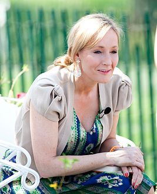

Моя улюблена книга
Захарчук В'ячеслав Леонідович
Короткий опис
На початку роману світ чарівників святкує поразку Лорда Волдеморта, могутнього і жорстокого злого чарівника. Вбивши Лілі та Джеймса Поттерів, Волдеморт намагається покінчити з їхнім однорічним сином Гаррі, але закляття любові обертається проти нього самого, знищивши його тіло і залишивши шрам у формі блискавки на чолі дитини. Професори Албус Дамблдор і Мінерва Макґонеґел, а також лісник Рубеус Геґрід залишають Гаррі коло дверей будинку його родичів-маґлів. Тітка Гаррі Петунія Дурслі є сестрою Лілі Поттер, хоча вона ніколи не почувала симпатії до чарівниці. Дурслі вирішують приховати від Гаррі правду про його батьків, переконавши його, що ті загинули в автокатастрофі. Протягом всього дитинства вони поводяться з ним украй неласкаво, водночас приділяючи надмірну увагу своєму синові Дадлі.
За кілька днів до свого 11-го дня народження Гаррі отримує загадкового листа, адресованого йому особисто. Прочитавши листа, розлючений дядько Вернон спалює його, не давши Гаррі навіть глянути. Втім, протягом наступних днів надходять нові листи у незліченній кількості. Рятуючись від химерної кореспонденції, Дурслі разом із Гаррі переховуються в хатинці на маленькому острові в океані. У ніч перед днем народження Гаррі до хатини вдирається Геґрід. Нейтралізувавши Дурслі, він дає Гарі змогу нарешті прочитати листа, який виявляється запрошенням вступити до «Школи Чарів і Чаклунства Гоґвортс». Наступного ранку Гаррі з Геґрідом вирушають до Лондона, де крізь чарівний паб «Дірявий казан» потрапляють на Алею Діаґон з метою купити необхідні для навчання речі за гроші, залишені Гаррі у спадок померлими батьками. Уперше потрапивши до світу чарівників, Гаррі з подивом дізнається, що є відомою особою (через перемогу над Волдемортом) і знайомиться з гоґвортським викладачем захисту від темних мистецтв професором Квірелом. Місяць потому на Гоґвортському екпресі, який вирушає з «платформи № 9¾» на вокзалі Кінґс Кросс, Гаррі вирушає до школи. У потязі він знайомиться зі своїми майбутніми друзями Роном Візлі, забудькуватим і незграбним Невілом Лонґботтомом і здібною юною чарівницею з маґлівської родини Герміоною Ґрейнджер.
Про автора
Джоа́н «Джо» Ро́улінг (англ. Joanne Rowling; псевдоніми — Дж. К. Ро́лінґ і Роберт Ґелбрейт; нар. 31 липня 1965) — британська письменниця, сценаристка, кінопродюсерка, здебільшого відома як авторка серії романів про Гаррі Поттера. Її книги одержали світове визнання, виграли низку нагород і вийшли тиражем понад 400 мільйонів примірників. Септологія очолила список найбільш продаваних серій романів в історії та була екранізована в серії однойменних кінофільмів, у продюсуванні та створенні сценарію до яких доклалась і сама письменниця. Джоан Ролінґ народилась в англійському місті Єйт. Ідея щодо написання книг про Гаррі Поттера спливла на думку майбутній авторці 1990 року під час поїздки потягом з Манчестера до Лондона, Ролінґ саме працювала дослідницею і двомовним секретарем у «Міжнародній амністії». У прийдешні сім років молода авторка пережила смерть матері, народження першої дитини, розлучення з першим чоловіком і відносну злиденність, аж допоки 1997 року не видала першу книгу з серії — «Гаррі Поттер і філософський камінь». Роман мав шість продовжень, останнє з яких вийшло друком 2007 року. З того часу Ролінґ написала чотири книги для дорослих: «Несподівана вакансія» (2012), а також (під псевдонімом Роберт Ґелбрейт) — детективи «Поклик зозулі» (2013), Шовкопряд[en] (2014) та «Кар'єра лиходія[en]» (2015). В 2016 році друком вийшло продовження поттеріани «Гаррі Поттер і прокляте дитя».
РОЗДІЛ ПЕРШИЙ
Хлопчик, що вижив
Містер і місіс Дурслі, що жили в будинку номер чотири на вуличці Прівіт-драйв, пишалися тим, що були, слава Богу, абсолютно нормальними. Кого-кого, але тільки не їх можна було б запідозрити, що вони пов'язані з таємницями чи дивами, бо такими дурницями вони не цікавилися.
Містер Дурслі керував фірмою "Ґраннінґс", яка виготовляла свердла. То був такий дебелий чолов'яга, що, здається, й шиї не мав, зате його обличчя прикрашали пишні вуса. Натомість місіс Дурслі була худорлява, білява, а її шия була майже вдвічі довша, ніж у звичайних людей, і це ставало їй у великій пригоді: надто вже вона полюбляла зазирати через паркан, підглядаючи за сусідами. Подружжя Дурслі мало синочка Дадлі, що був, на думку батьків, найкращим у світі.
Дурслі мали все, що хотіли, а до того ж і один секрет, і найдужче вони боялися, що хтось довідається про нього. Їм здавалося, що вони помруть, коли хтось почує про Поттерів. Місіс Поттер була сестрою місіс Дурслі, але вони не бачились уже кілька років. Місіс Дурслі вдавала, ніби взагалі не має сестри, бо сестра та її нікчема-чоловік були повною протилежністю Дурслі. Подружжя Дурслі тремтіло на саму думку про те, що сказали б сусіди, побачивши Поттерів на вулиці. Дурслі знали, що й Поттери мають сина, але ніколи його не бачили. Той хлопчик був ще однією причиною не знатися з Поттерами: Дурслі не хотіли, щоб їхній Дадлі спілкувався з такими дітьми.
Коли містер і місіс Дурслі прокинулись одного сірого нудного ранку у вівторок, – саме тоді й почалася наша історія, – захмарене небо за вікном аж ніяк не провіщало дивних і загадкових подій, які невдовзі мали трапитися в усій країні. Містер Дурслі щось мугикав, вибравши собі для роботи найгидкішу краватку, а місіс Дурслі радісно щебетала – щойно вона спромоглася посадити на високий дитячий стільчик верескливого Дадлі.
Ніхто й не помітив, як за вікном промайнула велика сіра сова.
О пів на дев'яту містер Дурслі підхопив портфель, цмокнув місіс Дурслі в щоку і хотів поцілувати на прощання й Дадлі, але не влучив, бо той якраз почав біситися, розкидаючи кашу на стіни. "От шибеник", – пирхнув містер Дурслі, виходячи з дому. Він сів у машину й почав задом виїжджати з подвір'я.
розі вулиці він помітив першу ознаку чогось незвичайного – кицьку, яка уважно вивчала мапу. Спочатку містер Дурслі цього й не усвідомив, тож озирнувся, щоб глянути ще раз. На розі Прівіт-драйв стояла смугаста кицька, але вже без мапи. Що це йому приверзлося? То була, напевне, гра світла. Він кліпнув очима і глянув на кицьку. Та – на нього. Завернувши за ріг і їдучи далі, містер Дурслі стежив за нею через дзеркальце. Кицька тепер читала напис "Прівіт-драйв", – хоча ні, лише дивилася на нього: коти ж не вміють читати. Містер Дурслі труснув головою і забув про кицьку.
Прямуючи до міста, він думав тільки про замовлення на велику партію свердел, яке сподівався отримати того дня.
Але біля самого міста щось його змусило забути і про свердла. Застрягши, як завжди зранку, у вуличній тисняві, він не міг не зауважити, що навколо, здається, дуже багато дивно вбраних людей. Людей у мантіях. Містер Дурслі терпіти не міг, коли хтось одягався незвично: ви тільки подивіться на цю молодь! Мабуть, ще одна нова дурнувата мода. Дурслі потарабанив пальцями по керму, а його очі натрапили на купку диваків, що стояли зовсім близенько. Ті схвильовано шепотілися. Містер Дурслі аж знетямився, побачивши, що там не тільки молодь: таж отой чоловік у смарагдовій мантії навіть старший за нього! Що за телепень! Але тут містерові Дурслі сяйнула думка, що це, мабуть, просто трюк, якась безглузда акція для збирання грошей… атож, цілком може бути. Машини, нарешті, рушили, й за кілька хвилин містер Дурслі заїхав на стоянку фірми "Ґраннінґс", знову думаючи лише про свердла.
У своєму кабінеті на десятому поверсі містер Дурслі завжди сидів спиною до вікна. Якби навпаки, то б, напевне, помітив, що цього ранку йому важче зосередитися на свердлах. Адже він не бачив, як повз вікна серед білого дня літали сови, хоча перехожі тицяли на них пальцями і стежили за ними, роззявивши рота. Більшість із них ніколи не бачили сови навіть уночі. Проте в містера Дурслі був абсолютно нормальний, не затьмарений совами ранок. Він нагримав на п'ятьох робітників. Залагодив по телефону кілька важливих справ і знову когось вилаяв. До самого обіду він був у гарному настрої, а тоді вирішив розім'ятися й купити собі булочку в крамничці на тому боці вулиці.
Він уже й забув про людей у мантіях, аж доки натрапив на цілий їхній гурт поблизу крамнички. Проминаючи їх, сердито зиркнув на них і чомусь занепокоївся. Вони збуджено перешіптувались, але Дурслі ні в кого не побачив жодної бляшанки для збору грошей. Уже повертаючись назад із великою пампушкою в торбинці, він почув кілька слів з їхньої розмови.
– Так, так, Поттери, я вже чув…
– Так, їхній син Гаррі…
Містер Дурслі завмер. Його охопив жах. Він озирнувся на тих шептунів, наче хотів їм щось сказати, проте передумав.
Він перебіг вулицю, поспіхом піднявся до кабінету, гукнув секретарці не турбувати його, схопив телефон і почав набирати свій домашній номер, аж раптом зупинився. Поклав слухавку й замислено погладив вуса. Та ні, яка дурниця. Поттер – не таке вже й рідкісне прізвище. Є безліч людей, які мають не тільки це прізвище, а й сина на ім'я Гаррі. Так міркуючи, Дурслі вже навіть не знав, чи його племінника справді звуть Гаррі. Він його ніколи й не бачив. Може, то Гарві. Або Гарольд. Не варто хвилювати місіс Дурслі, вона й так дратується на саму згадку про сестру. Він їй не докоряв: якби така сестра була в нього… А все ж оті люди в мантіях…
Тепер Дурслі було значно важче зосередитися на свердлах і, виходячи о п'ятій пополудні з будинку, він був такий неуважний, що наскочив на когось біля самих дверей.
– Перепрошую, – буркнув він маленькому старому чоловічкові, який заточився й мало не впав. Лише тоді містер Дурслі зауважив, що той мав на собі фіалкову мантію. Чоловічок, здається, нітрохи не розгнівався, що його майже збили на землю. Навпаки, він радісно заусміхався й верескнув:
– Не біда, мій любий, мене сьогодні нічим не засмутиш! Радійте, нарешті відійшов Відомо-Хто! Навіть ви, маґли, повинні святкувати цей чудовий-пречудовий день!
Старенький обняв містера Дурслі за поперек і подався геть.
Містер Дурслі стояв як укопаний. Його щойно обіймав незнайомець. А ще, здається, його обізвали маґлом – байдуже, що це слово означає. Дурслі збентежився. Побіг до машини й рушив додому, сподіваючись, що все це йому просто приверзлося, хоча такого годі було й сподіватися, бо він ніколи не схвалював фантазій.
Заїжджаючи на подвір'я будинку номер чотири, Дурслі відразу зауважив (і це не поліпшило його настрою) смугасту кицьку, яку бачив уранці. Кицька тепер сиділа на їхньому мурі. Безперечно, кицька та сама – ті самі цятки довкола очей.
– Киш! – крикнув містер Дурслі.
Кицька й не ворухнулася. Лише суворо глянула на нього. Хіба так поводяться нормальні коти, здивувався містер Дурслі. Намагаючись опанувати себе, Дурслі увійшов до будинку. Він і далі збирався нічого не казати дружині.
Місіс Дурслі провела гарний спокійний день. За вечерею вона розповіла чоловікові про всі проблеми сусідів із донькою і про те, що Дадлі вивчив нову фразу: "Не буду!" Містер Дурслі старався поводитися нормально. Коли Дадлі поклали спати, він пішов до вітальні, де ще встиг почути останнє повідомлення вечірніх теленовин.
"І на завершення: сьогодні помічено дуже дивну поведінку сов. Хоча сови полюють переважно вночі і майже ніколи не літають удень, сьогодні в усій країні з самого ранку зареєстровано сотні випадків літання цих птахів. Орнітологи не можуть дати жодного задовільного пояснення, чому раптом сови змінили свій спосіб життя, – диктор дозволив собі усміхнутися, – і це найзагадковіше. А тепер Джим Макґафін з прогнозом погоди. Джим, чи нині будуть нові совині зливи?"
"Ну, Тед, – відповів синоптик, – про це я не знаю, але сьогодні незвично поводилися не тільки сови. Мені телефонували глядачі з таких далеких місць, як Кент, Йоркшир і Данді, й повідомляли, що замість обіцяного вчора дощу вони спостерігали потоки падучих зірок! Можливо, хтось почав завчасно пускати феєрверки, – але ж Свято Вогню, шановні, відбудеться лише наступного тижня! Проте обіцяю: сьогодні вночі таки буде дощ".
Містер Дурслі закляк у кріслі. Зорепади над Британією? Сови серед білого дня? Загадкові люди в мантіях? І шепотіння, шепотіння про Поттерів…
До кімнати увійшла місіс Дурслі з двома чашками чаю. Ні, недобре. Треба їй щось сказати. Він нервово кахикнув:
– Е-е… Петуніє, люба… чи були недавно якісь вістки від твоєї сестри?
Як він і сподівався, місіс Дурслі відразу розсердилася. Зрештою, вони завжди вдавали, ніби тієї сестри просто не існує.
– Ні, – гостро відповіла вона. – А що?
– Та якісь дивні новини, – промимрив містер Дурслі. – Сови… зорепади… а в місті сьогодні було повно чудернацьких людей…
– Ну то й що? – відрубала місіс Дурслі.
– Та я просто гадав… може… це якось пов'язане… ну, знаєш… з її сімейкою.
Місіс Дурслі, стуливши вуста, сьорбала чай. Містер Дурслі думав, чи не наважитись, бува, розповісти дружині про почуте на вулиці прізвище Поттер, але вирішив, що краще мовчати. Замість цього сказав якомога недбаліше:
– Цей їхній син… здається, він одноліток Дадлі, правда?
– Здається, – сухо відповіла місіс Дурслі.
– Як його звати? Говард, чи що?
– Гаррі, якщо тобі так уже кортить. Паскудне й банальне ім'я.
– Авжеж, – сказав містер Дурслі, а його серце завмерло. – Я абсолютно згоден.
Підіймаючись до спальні, він уже ні про що не згадував. Коли місіс Дурслі пішла до ванни, містер Дурслі підкрався до вікна й визирнув надвір. Кицька й досі сиділа на мурі і дивилася на вулицю, немов чогось чекала. Невже йому ввижається? До чого тут Поттери? А якщо вони й справді пов'язані з тими дивними подіями, і якби всі дізналися, що вони їм родичі, – о ні, він цього б не пережив.
Залізши до ліжка, місіс Дурслі швиденько заснула, а от містер Дурслі ще довго міркував над тим усім. Уже засинаючи, заспокоїв себе, що, навіть якби й був якийсь зв'язок з Поттерами, то немає жодних підстав боятися їхнього приїзду. Поттери добре знають, якої він думки про них та подібних до них… Дурслі не міг собі уявити, як його і Петунію можна вплутати до подій, які, можливо, чекають на них попереду. Він позіхнув і повернувся на бік. Їх це анітрохи не стосується.
Як же він помилявся!
Містер Дурслі, може, й поринав у неспокійний сон, а от кицька на мурі й не думала спати. Вона сиділа непорушно, мов статуя, прикипівши очима до далекого краю вулички Прівіт-драйв. Навіть коли на сусідній вулиці гримнули автомобільні дверцята, а над головою шугонули дві сови, кицька й оком не змигнула. Ворухнулася вона, власне, майже опівночі.
На розі, за яким стежила кицька, з'явився чоловік, і то так несподівано й тихо, немов вийшов із-під землі. Кицька повела хвостом і примружила очі.
Прівіт-драйв ще ніколи не бачила такого чоловіка. Він був високий, худорлявий і, здається, дуже старий, бо довге сиве волосся й бороду можна було заткнути йому за пояс. Його довга пурпурова мантія волочилася по землі, ховаючи черевики з пряжками на високих підборах. За окулярами, що скидалися на два півмісяці, іскрилися голубі очі, а ніс був страшенно довгий і гачкуватий, неначе його перебили принаймні двічі. Звали цього чоловіка Албус Дамблдор.
Албус Дамблдор, здається, не усвідомлював, що опинився на вулиці, де все, починаючи від його імені й закінчуючи черевиками, було небажаним. Він заклопотано шукав щось у своїй мантії. Але те, що за ним стежать, усвідомив, бо раптом подивився на кицьку, яка й далі розглядала його з протилежного краю вулиці. Побачивши її, він, здається, втішився і реготнув, пробурмотівши: "Я так і знав".
Нарешті у внутрішній кишені він знайшов, що шукав. То була неначе срібна запальничка. Відкривши й піднявши її вгору, він клацнув. З легеньким тріском згас найближчий вуличний ліхтар. Він клацнув знову – блимнувши, поринув у темряву наступний ліхтар. Дванадцять разів він клацав світлогасником, аж доки на вулиці лишилися тільки дві малесенькі світлі цяточки – котячі очі, що дивилися на нього. Ніхто, навіть гостроока місіс Дурслі, не зауважив би нічого на бруківці, якби раптом визирнув з вікна. Дамблдор сховав світлогасник у мантію і попрямував вулицею до будинку номер чотири, де й примостився на стіні поряд із кицькою.
На неї він навіть не глянув, але за хвилину озвався:
Усміхнувшись, він повернувся до кицьки, але її там уже не було. Натомість він усміхався радше суворій на вигляд жінці у квадратних окулярах, які мали точнісінько таку саму форму, що й цяточки навколо котячих очей. На жінці теж була мантія, але смарагдова. Чорні коси були зібрані в тугий вузол. Жінка вочевидь роздратувалася.
– Як ви дізналися, що це я? – запитала вона.
– Люба професорко, я ще ніколи не бачив, щоб кіт сидів отак заціпенівши.
– Якби вам довелося просидіти цілісінький день на цегляному мурі, то й ви б заціпеніли, – відказала професорка Макґонеґел.
– Цілісінький день? А коли ж ви святкували? Я тут по дорозі бачив, як усі святкують і тішаться.
Професорка Макґонеґел сердито пирхнула.
– Атож, усі святкують, звичайно, – мовила вона нетерпляче. – Годилося б бути обережнішими, але ж ні – навіть маґли помітили, що тут щось діється. Про це повідомляли у їхніх новинах. – Вона кивнула головою в бік темного вікна вітальні Дурслі. – Я сама чула. Совині зграї… зорепади… Ну, не такі вже вони й дурні. Мусили щось помітити. Зорепади в Кенті – хто б це зробив, як не Дідалус Діґл. Йому завжди клепки бракувало.
– Вони не винні, – лагідно сказав Дамблдор. – Цілих одинадцять років ми майже нічого не святкували.
– Та я знаю, – роздратовано буркнула професорка Макґонеґел. – Але ж не можна втрачати голову. А всі такі безтурботні, повибігали серед білого дня на вулиці, навіть не замаскувалися під маґлів і плетуть язиками.
Тут вона скоса блимнула на Дамблдора, наче сподівалася щось почути, але той мовчав, тож їй довелося говорити знову:
– Ото була б оказія, якби саме того дня, коли, здається, нарешті зникнув Відомо-Хто, про нас довідалися маґли. Сподіваюся, Дамблдоре, він справді відійшов?
– Начебто так, – відповів Дамблдор. – Маємо бути вдячними. Може, бажаєте лимонного шербету?
– Чого?
– Лимонного шербету. Це такі маґлівські солодощі, які мені дуже смакують.
– Ні, дякую, – сухо відповіла професорка Макґонеґел, мовби натякаючи, що нині не до лимонних шербетів. – Отож, навіть якщо й справді відійшов Відомо-Хто…
– Пані професорко, чи не годилося б вам, такій розумній особі, називати його на ім'я? Що то за безглузде "Відомо-Хто" – я вже одинадцять років переконую всіх називати його справжнім ім'ям – Волдеморт. Професорка Макґонеґел здригнулася, але Дамблдор, що саме розпаковував лимонний шербет, цього начебто не помітив.
– Ми тільки заплутуємо все, кажучи "Відомо-Хто". Я ніколи не бачив жодної причини, чому ми повинні боятися вимовляти ім'я Волдеморта.
– Я знаю, що вам можна не боятися, – водночас і сердито, й захоплено сказала професорка Макґонеґел, – але ж ви інакші. Усі знають, що Відом… ну, гаразд, Волдеморт – боявся тільки вас.
– Ви мені лестите, – мовив спокійно Дамблдор. – Волдеморт мав силу, якої я ніколи не матиму.
– Тільки тому, що ви надто… е-е… шляхетні, щоб скористатися нею.
– Добре, що зараз темно. Я ще ніколи так не червонів, відколи мадам Помфрі похвалила мій новий капелюх.
Професорка Макґонеґел гостро зиркнула на Дамблдора і сказала:
– Сови – це ще дрібниці, а от знаєте, які чутки тут літають? Знаєте, про що всі говорять? Чому він зник? Що його врешті зупинило?
Професорка Макґонеґел, здавалося, підійшла до теми, яку прагнула обговорити й задля якої висиділа цілісінький день на твердому холодному мурі, бо ні кицька, ні жінка не могли б так пронизливо вп'ястися очима в Дамблдора. Було очевидно, що, попри всі чутки, вона повірить їм тільки тоді, коли їх підтвердить Дамблдор.
Одначе Дамблдор узяв собі ще шматочок шербету і мовчав.
– Так ось, кажуть, – мовила вона з притиском, – ніби минулої ночі Волдеморт з'явився в долині Ґодрика. Щоб розшукати Поттерів. Ходять чутки, начебто Лілі і Джеймс Поттери за… загинули. Дамблдор схилив голову, і професорка Макґо-неґел тяжко зітхнула.
– Лілі і Джеймс… Я не можу… не хочу в це вірити… Ох, Албусе!
– Знаю… знаю, – сумно промовив Дамблдор і поплескав її по плечі.
– Це ще не все, – тремтячим голосом вела далі професорка Макґонеґел. – Кажуть, він намагався вбити Гаррі, сина Поттерів. Але не зміг… Він не зміг убити того хлопчика. Ніхто не знає, чому і як, але кажуть, ніби, не спромігшись убити Гаррі Пот-тера, Волдеморт утратив свою силу, – і саме тому його не стало.
Дамблдор понуро кивнув головою.
– Це… правда? – затнулася професорка Макґонеґел. – Невже після всього, що він… заподіяв, замордувавши стількох людей, він не зміг убити хлопчика? Я просто приголомшена… Його ніхто не міг зупинити, тож як, о Господи, спромігся вижити Гаррі?
– Хіба я знаю? – відповів Дамблдор. – Можна тільки здогадуватись.
Професорка Макґонеґел витягла мереживну хустинку і приклала її до очей, що ховалися за окулярами. Дамблдор засопів, дістав з кишені золотого годинника і глянув на нього. То був дуже дивний годинник. Він мав дванадцять стрілок, але не мав цифр: замість них по ободу рухалися маленькі пла-нетки. Проте, здається, вони щось йому розповіли, бо Дамблдор, запхавши годинника назад до кишені, проказав:
– Геґрід запізнюється. До речі, це, мабуть, він сповістив, що я буду тут, га?
– Так, – призналася професорка Макґонеґел. – І, може, я тепер почую від вас, чому ви обрали саме це місце?
– Я прийшов, щоб залишити Гаррі в тітки з дядьком. Тепер це його єдина родина.
– Та ви що?… – Невже ви маєте на увазі людей, які мешкають отут? – вигукнула професорка Макґонеґел. Вона зірвалася на ноги і показала на будинок номер чотири. – Дамблдоре, це неможливо. Я цілий день за ними спостерігала. Годі знайти якусь іншу пару, що так відрізнялася б від нас. А син у них який, – я бачила, як він верещав на всю вулицю і штурхав свою маму, вимагаючи цукерок! Як може тут жити Гаррі Поттер?
– Це найкраще місце для нього, – твердо заявив Дамблдор. – Тітка з дядьком усе йому пояснять, коли він виросте. Я написав їм листа.
– Листа? – розчаровано перепитала професорка Макґонеґел, умощуючись знову на стіні. – Дамблдоре, невже ви гадаєте, що це можна пояснити листом? Ці люди ніколи не зрозуміють того хлопчика! Він має стати знаменитим, легендарним, і я не здивуюся, якщо сьогоднішній день у майбутньому святкуватимуть як день Гаррі Поттера. Про Гаррі напишуть книжки, і його ім'я знатиме кожна дитина!
– Авжеж, – підтвердив Дамблдор, поважно дивлячись поверх своїх серпастих окулярів. – Від того голова запаморочиться в будь-якого хлопця. Знаменитий, перше ніж навчиться ходити й говорити! Славетний, сам не знаючи чому! Хіба ви не розумієте, що буде набагато краще, коли він виростатиме, не знаючи про це, і дізнається тільки тоді, коли дозріє?
Професорка Макґонеґел відкрила було рота, але передумала, ковтнула слину і проказала:
– Так… Ви маєте слушність, звичайно. Але як хлопчик опиниться тут, Дамблдоре? – Вона раптом глянула на його мантію, припускаючи, що саме в ній захований Гаррі.
– Його принесе Геґрід.
– Гадаєте, це… безпечно – довіряти Геґрідові таку важливу справу?
– Я б і своє життя йому довірив, – відповів Дамблдор.
– Я не кажу, що в нього немає серця, – неохоче протягнула професорка Макґонеґел, – але ж погодьтеся – він легковажний. Він схильний до… Що це?
Навколишню тишу порушив низький гул, що ставав дедалі гучнішим, доки вони озирали вулицю, шукаючи світла фар. Згодом гул перетворився у гуркіт, і вони глянули вгору, зринувши з неба, на дорозі перед ними приземлився величезний мотоцикл.
Так, величезний, але й він видавався малесеньким проти чолов'яги, що приїхав на ньому. Він був майже вдвічі вищий за нормальну людину і принаймні вп'ятеро ширший. Він здавався неймовірно великим і якимсь несамовитим: довгі пасма кошлатого чорного волосся й бороди закривали йому обличчя, долоні були здоровенні, наче накривки сміттєвих бачків, а ноги у шкіряних чоботях скидалися на дельфінів.
У дебелих і м'язистих руках він тримав купу ковдр.
– Геґріде, – полегшено зітхнув Дамблдор. – Нарешті. А де ти взяв мотоцикла?
– Та си позичив, професоре Дамблдоре, прошу пана, – відповів велетень, неспішно злізаючи з мотоцикла. – Молодший Сіріус Блек дав мені його. Всьо файно, пане.
– Проблем не було?
– Та нє, прошу пана. Хата майже завалилася, але я забрав дитєтко ще до того, як збіглися маґли. Хлопчик заснув, коли ми летіли над Брістолем.
Дамблдор і професорка Макґонеґел схилилися над ковдрами. У тому сповитку міцно спало немовля. На чолі, під жмутиком чорного, як смола, волосся виднівся дивної форми знак, подібний на блискавку.
– Це?… – пошепки запитала професорка Макґонеґел.
– Так, – сказав Дамблдор. – Він матиме цей шрам назавжди.
– Дамблдоре, а чи не можна його прибрати?
– Навіть якби міг, я б не прибрав. Від шрамів інколи є користь. Я от маю рубець над лівим коліном, – і це досконала мапа лондонського метро. Ану, дай-но його мені, Геґріде, не марнуймо часу.
Дамблдор узяв Гаррі на руки і обернувся до будинку Дурслі.
– Прошу пана, можна… можна я попрощаюся з малим? – попросив Геґрід.
Він схилив над Гаррі свою велику кудлату голову й незграбно поцілував його. Тоді раптом заскавулів, немов побитий пес.
– Тссс! – зашипіла професорка Макґонеґел. – Розбудиш маґлів!
– В-в-вибачєйте, – проскиглив Геґрід, дістаючи велику й брудну хустинку і закриваючи нею обличчя. – Але м-м-маю такий жаль… Лілі і Джеймс загинули, а Гаррі, бідне дитєтко, тепер мусит жити з маґлами…
– Так, так, дуже прикро, але отямся, Геґріде, бо нас тут почують, – зашепотіла професорка Макґонеґел, легенько поплескавши Геґріда по руці.
Дамблдор тим часом переступив через низенький мур і підійшов до дверей. Він обережно поклав Гаррі на поріг, витяг із мантії листа, запхав його між ковдри, а тоді вернувся назад. Цілу хвилину всі троє стояли й дивилися на маленький клуночок. Геґрідові плечі здригалися, професорка Макґонеґел нестямно кліпала очима, а мерехтливе сяйво, що завжди лилося з Дамблдорових зіниць, тепер згасло.
– Що ж, – мовив нарешті Дамблдор, – це все. Нема чого тут лишатися. Можна йти святкувати.
– Атож, – сказав приглушеним голосом Геґрід. – Я си маю віддати Сіріусу мотоцикля. Добраніч, пані професорко Макґонеґел і професоре Дамблдоре, прошу пана.
Утерши рукавом куртки сльози, Геґрід сів на мотоцикл і завів двигуна; мотоцикл із гуркотом знявся в повітря й розтанув у пітьмі.
– Сподіваюся, скоро побачимось, професорко Макґонеґел, – кивнув головою Дамблдор.
Професорка у відповідь тільки шморгнула носом.
Дамблдор відвернувся й рушив вулицею. Зупинившись на розі, дістав світлогасника. Клац! – і дванадцять світлових кульок метнулися до своїх ліхтарів, Прівіт-драйв спалахнула помаранчевим сяйвом, і ще можна було помітити, як на протилежному кінці вулиці, скрадаючись, зникла за рогом кицька.
Тепер Дамблдор бачив лише клунок з ковдрами на порозі будинку номер чотири.
– Щасти тобі, Гаррі, – тихо промовив він. Крутнувся на підборах і, зметнувши мантією, щез.
Уздовж рівненько підстрижених живоплотів Прівіт-драйв промчав вітерець, і вуличка чемно й тихенько лежала під чорним небом, нітрохи не скидаючись на місце, де могло б статися щось дивне. Гаррі Поттер, не прокидаючись, повернувся у ковдрах на другий бік. Одним рученям він накрив листа біля себе і спав далі, не знаючи, що він особливий, не знаючи, що він знаменитий, не знаючи, що за кілька годин його розбудить вереск місіс Дурслі, коли вона відчинить двері, щоб поставити пляшки на молоко; не знаючи, що протягом наступних кількох тижнів його штурхатиме й щипатиме двоюрідний брат Дадлі… Звідки йому було знати, що саме цієї миті по всій країні потай збиралися люди, підносили келихи і стишено виголошували тости: "За Гаррі Поттера – хлопчика, що вижив!"
РОЗДІЛ ДРУГИЙ
Зникле скло
Минуло майже десять років відтоді, коли, прокинувшись, подружжя Дурслі побачило на порозі свого племінника, але Прівіт-драйв навряд чи й змінилася. Над охайними садочками так само зійшло сонце, висвітило мідну табличку з номером 4 на дверях будинку Дурслі й проникло до вітальні, яка, здається, нітрохи не змінилася з того вечора, коли містер Дурслі дивився ті зловісні теленовини про сов. Хіба що фотографії на каміні показували, скільки насправді збігло часу. Десять років тому там стояло безліч фотографій чогось такого, що нагадувало великий рожевий надувний м'ячик у різнокольорових шапочках із бомбончиками, але тепер Дадлі Дурслі виріс, і на знімках можна було бачити дебелого білявого хлопця, що їздив на своєму першому велосипеді, крутився на ярмарковій каруселі, сидів із батьком за комп'ютерною грою, приймав материні обійми та поцілунки. В усій кімнаті ніщо не свідчило, що в будинку живе ще один хлопець.
Але Гаррі Поттер досі жив там і зараз він, власне, ще спав. Проте недовго, бо тітка Петунія вже прокинулась, і залунав її пронизливий голос.
– Ану вставай! Мерщій!
Здригнувшись, Гаррі прокинувся. Тітка знову; затарабанила у двері.
– Вставай! – горлала вона.
Гаррі почув, як вона йде на кухню, а потім звідти долинув брязкіт сковорідки, яку ставили на плиту. Він ліг горілиць і спробував пригадати свій сон.
То був гарний сон. Йому снився летючий мотоцикл. Гаррі здалося, що він бачив цей сон і раніше.
– Ти вже прокинувся? – знову підійшла до дверей тітка.
– Майже, – відповів Гаррі.
– Давай, ворушись, треба за беконом подивитися. Пильнуй, щоб не згорів, – на Дадликові іменини все має бути ідеальним.
Гаррі застогнав.
– Що ти сказав? – гаркнула за дверима тітка.
– Нічого, нічого…
День народження Дадлі – як він міг забути? Гаррі поволеньки виліз із ліжка й почав шукати шкарпетки. Знайшов їх під ліжком і, скинувши павука, натягнув на ноги. Гаррі звик до павуків, бо їх було повно в комірчині під сходами, а саме там він і спав.
Одягнувшись, пішов через коридор на кухню. Увесь стіл був завалений дарунками. Дадлі, здається, матиме, як і хотів, новий комп'ютер, уже не кажучи про другий телевізор та спортивний велосипед. Гаррі не розумів, навіщо Дадлі велосипед, адже його двоюрідний брат був товстунцем і не любив рухатися, хіба що, звісно, штурхав кого-небудь. Найдужче він полюбляв штурхати Гаррі, проте рідко коли наздоганяв його – Гаррі був на диво спритний.
Можливо, тому що жив у темній комірчині, Гаррі, як на свій вік, завжди був малим і миршавим. Але він видавався ще меншим і худішим, ніж насправді, бо щоразу мусив доношувати старий одяг Дадлі, а той був десь учетверо ширший від нього. Гаррі мав худе обличчя, гострі коліна, чорне волосся і ясно-зелені очі. Він носив круглі, обмотані скотчем окуляри, бо Дадлі часто ламав їх, луплячи його по носі. Єдине, що подобалося Гаррі у власному вигляді, – тонесенький шрам на чолі у формі блискавки. Він мав його, скільки себе пам'ятав, і першим його запитанням до тітки Петунії було, звідки той шрам узявся.
– З автомобільної аварії, коли загинули твої батьки, – відповіла вона. – І не питай більше нічого.
Не питай нічого - таким було найперше правило розміреного життя родини Дурслі.
Дядько Вернон увійшов до кухні, коли Гаррі перевертав бекон.
– Зачешися! – гримнув він замість ранкового вітання.
Приблизно раз на тиждень дядько Вернон відривав очі від газети й наказував Гаррі підстригтися. Гаррі стригся, мабуть, частіше, ніж усі разом хлопці з його класу, але це не допомагало, бо його волосся однаково стирчало на всі боки.
Гаррі вже смажив яйця, коли в кухні з'явився Дадлі разом із матір'ю. Дадлі був дуже схожий на дядька Вернона. Він мав широке рожеве обличчя, коротесеньку шию, маленькі водянисті синюваті очка й густе біляве волосся, що гладенько лежало на жирній і круглій голові. Тітка Петунія часто казала, що Дадлі – викапане янголятко, а Гаррі не раз приказував, що Дадлі – порося в перуці.
Гаррі поклав на стіл тарілки з яєшнею та беконом, і це далося йому нелегко, бо на столі було обмаль місця. Дадлі тим часом порахував подарунки й одразу нахнюпився.
– Тридцять шість, – сказав він, дивлячись на батьків. – На два менше, ніж торік.
– Синку, ти ж не побачив дарунка від тітоньки Мардж, ось він, під великим пакунком від мамусі й татуся.
– Ну, добре, тридцять сім, – налився кров'ю Дадлі.
Гаррі відчув, що в Дадлі от-от почнеться істерика, тому швиденько наминав бекон, остерігаючись, що його братик перекине стола.
Тітка Петунія, мабуть, також відчула небезпеку, бо швиденько проказала:
– А сьогодні ми купимо тобі ще два даруночки. Що скажеш, золотце? Ще два даруночки. Гаразд?
Дадлі замислився. Ох і важкі ж думки! Зрештою поволі вимовив:
– Тож я матиму тридцять… тридцять…
– Тридцять дев'ять, солоденький мій! – підказала тітка Петунія.
– Ух! – важко упав на стілець Дадлі і схопив найближчий пакунок. – Гаразд.
– Малий шибеник знає собі ціну, як і його батько, – реготнув дядько Вернон, скуйовдивши синові волосся. – Молодчина, Дадлі!
Задзвонив телефон, і тітка Петунія вийшла з кухні, а Гаррі з дядьком Верноном стежили, як Дадлі розпаковував спортивний велосипед, кіноапарат, літак з дистанційним керуванням, шістнадцять нових комп'ютерних ігор і відеомагнітофон. Він саме здирав папір із золотого наручного годинника, коли повернулася з телефоном тітка Петунія – вже сердита і розтривожена.
– Погані новини, Верноне, – простогнала вона. – Місіс Фіґ зламала ногу. Вона не зможе його взяти. – Тітка кивнула головою на Гаррі.
Дадлі нажахано роззявив рота, а в Гаррі тьохнуло серце. Щороку на день народження Дадлі батьки цілісінький день водили сина і його приятеля по розважальних парках, "макдональдсах" і кінотеатрах. А Гаррі щороку лишався з місіс Фіґ, недоумкуватою старою, що жила за два квартали. Гаррі ненавидів її дім. Він до самого даху просмер-дівся капустою, а місіс Фіґ примушувала його розглядати фотографії усіх котів, які в неї колись були.
– І що тепер? – люто подивилася на Гаррі тітка Петунія, немов він спланував такий підступ.
Гаррі розумів, що негарно радіти з приводу зламаної ноги місіс Фіґ, але стриматися було важко, бо він збагнув, що тепер лише через рік знову побачить знімки Мурчика, Білосніжки, Ла-поньки і Марсика.
– Можна подзвонити до Мардж, – запропонував дядько Вернон.
– Не мели дурниць, Вернене, вона цього хлопця терпіти не може.
Дурслі часто розмовляли про Гаррі так, ніби його й близько не було або ніби він був бридким слимаком і не міг розуміти їхньої мови.
– А та, як її там, твоя товаришка Івон?
– Відпочиває на Майорці, – відрубала тітка Петунія.
– Можна лишити мене тут, – з надією мовив Гаррі (він міг би нарешті дивитися по телевізору все, що захоче, а може, й погрався б Дадловим комп'ютером).
Тітка Петунія немов цитрину проковтнула.
– Щоб ти загидив увесь будинок? – гаркнула вона.
– Я нічого не зроблю, – сказав Гаррі, але його ніхто не слухав.
– Гадаю, ми візьмемо його до зоопарку, – протяжно мовила тітка Петунія, – …і залишимо там у машині…
– Машина ще новісінька, а ти кажеш "залишимо"?
Дадлі зайшовся голосним плачем. Власне, то був не плач, він уже кілька років по-справжньому й не плакав, але знав, що досить йому скривитися і заскиглити, як мати зробить усе, що йому заманеться.
– Не плач, любий Дадичку, мамуся не дозволить йому зіпсувати твоє свято! – залементувала вона, пригортаючи сина.
– Я… не хочу… щоб… він… ї-ї-їхав! – верещав Дадлі в паузах між удаваними риданнями. – Він завжди все пс…псує! – огидно вишкірився він на Гаррі, визираючи з-під маминих рук, і саме тоді хтось подзвонив у двері.
– О Боже, вони вже тут! – вигукнула тітка Петунія, і за мить разом зі своєю мамою з'явився Пірс Полкіс, найкращий приятель Дадлі. Пірс був кістлявим хлопчиком зі щурячим обличчям. Здебільшого саме він тримав ззаду за руки тих дітей, яких лупцював Дадлі. Побачивши його, Дадлі миттю урвав свій удаваний плач.
За півгодини Гаррі, не вірячи своєму щастю, вже сидів разом з Пірсом і Дадлі на задньому сидінні машини Дурслі, вперше в житті їдучи до зоопарку. Тітка й дядько так і не придумали, куди його подіти, але перед від'їздом дядько Вернон відвів Гаррі набік.
– Попереджаю, – сказав він, наблизивши впритул до Гаррі своє широке бурякове обличчя, – попереджаю тебе, хлопче, відразу: викинеш якогось коника – сидітимеш у коморі аж до Різдва.
– Повірте, я не збираюся нічого викидати, – пообіцяв Гаррі.
Але дядько Вернон йому не повірив. Гаррі ніхто не вірив. Річ у тім, що довкола Гаррі часто коїлося щось дивне, але Дурслів годі було переконати, що він до цього не причетний.
Одного разу тітка Петунія, якій набридло, що Гаррі завжди повертається з перукарні таким, ніби не був там зроду, взяла на кухні ножиці й так обчикрижила його, що він став майже лисий, проте не чіпала чубчика, щоб "приховати той жахливий шрам". Дадлі дурнувато насміхався з Гаррі, який не спав цілісіньку ніч, уявляючи, як він завтра прийде до школи, де вже й так глузували з його обвислого одягу і обмотаних окулярів. Але вранці виявилось, що його волосся точнісінько таке, як до того, коли його зістригла тітка Петунія. За це Гаррі мусив цілий тиждень просидіти в комірчині, хоча й намагався пояснити, що він не може пояснити, як воно відросло так швидко.
Іншого разу тітка Петунія силкувалася надягти на нього огидний старий Дадлів джемпер (бурий з жовтогарячими бомбончиками). Що ревніше натягувала вона йому на голову джемпера, то меншим він ставав, поки, зрештою, вкоротився так, що наліз би хіба на ляльку, та аж ніяк не на Гаррі. Тітка Петунія вирішила, що джемпер, мабуть, збігся під час прання, тож, на щастя, не покарала Гаррі.
А ще Гаррі мав великі неприємності, коли його знайшли на даху шкільної кухні. Дадлі зі своєю зграєю, як завжди, переслідував Гаррі, який раптом опинився верхи на димарі, здивований не менше від решти хлопців. Подружжя Дурслі отримали гнівного листа від директриси, що писала, мовляв, Гаррі видирається на шкільні будівлі. Але (як кричав дядькові Гаррі, замкнений у комірчині) він лише стрибнув, аби заховатися за великі сміттєві бачки коло кухонних дверей. Гаррі думав, ніби під час стрибка його підхопив вітер.
Але сьогодні все мало бути гаразд. Нехай навіть поруч є Дадлі й Пірс, це однак краще, ніж просидіти цілий день у школі, в комірчині чи у про-смердженій капустою вітальні місіс Фіґ.
Дорогою дядько Вернон скаржився тітці Петунії. Він мав звичай на все нарікати, а його улюбленими темами були робітники, Гаррі, місцевий уряд, Гаррі, банк і знову Гаррі. Цього ранку дядько нарікав на мотоциклістів:
– Гасають, як божевільні! Пацани, хулігани! – буркнув він, коли їх обігнав мотоцикл.
– А мені снився мотоцикл! – згадав раптом Гаррі. – Він літав.
Дядько Вернон мало не наїхав на передню машину. Він обернувся і загорлав на Гаррі, а його обличчя перетворилося на великий буряк із вусами:
– МОТОЦИКЛИ НЕ ЛІТАЮТЬ! Дадлі й Пірс захихотіли.
– Знаю, – знітився Гаррі. – Це був тільки сон. Краще б він нічого не казав. Дурслі не любили, коли Гаррі запитував про щось, але ще дужче їх дратували його балачки про те, що було не таким, як треба, і байдуже, чи йому приснилося що-небудь, чи він переказував мультфільм: адже тоді їм здавалося, ніби він набирається небезпечних ідей.
Тієї суботи світило яскраве сонце, і зоопарк був заповнений людьми. Біля входу для Дадлі й Пірса купили по великому шоколадному морозиву, а коли усміхнена жіночка у віконечку запитала Гаррі (перед тим, як його відтягли від фургончика), що він бажає, йому купили дешевого лимонного льодяника. Також непогано, думав Гаррі, посмоктуючи його, поки вони розглядали горилу, що чухала собі потилицю й дуже скидалася на Дадлі, хоча й не була білявою.
Давно вже Гаррі не мав такого чудового ранку. Він старався триматися трохи осторонь від Дурслі, щоб Дадлі й Пірс, яким звірята вже почали набридати, не взялися до своєї улюбленої розваги – штурхати його. Пообідали вони всі в ресторанчику на території зоопарку, а коли в Дадлі почалася істерика, бо йому здалося, ніби в його склянці замало морозива, дядько Вернон купив йому ще одну порцію, а Гаррі дозволили доїсти першу.
Пізніше Гаррі згадував, що треба було зразу передбачити: таке щастя довго не триває.
Пообідавши, вони пішли до павільйону з плазунами. Там було тьмяно й прохолодно, а вздовж стін тягнулися освітлені вітрини. За склом на камінних брилах і шматках дерев повзали й рачкували різноманітні ящірки та змії. Дадлі й Пірс хотіли подивитися на величезних отруйних кобр і товстезних пітонів, здатних задушити людину. Дадлі швидко знайшов найбільшу зміюку. Вона могла б двічі обкрутитися довкола машини дядька Вернона й розчавити її, мов сірникову коробку, але нині, здається, не мала такого войовничого настрою. Змія, власне, міцно спала.
Дадлі притиснувся носом до скла й роздивлявся її лискучі брунатні кільця.
– Нехай вона ворухнеться! – заскиглив він до батька.
Дядько Вернон постукав по склу, але змія навіть не здригнулася.
– Ще раз! – вимагав Дадлі.
Дядько Вернон щосили загрюкав кісточками пальців, та змія й далі дрімала.
– Мені нудно, – застогнав Дадлі і відійшов набік.
Гаррі наблизився до вітрини й уважно подивився на змію. Він би не здивувався, якби вона й сама померла з нудьги, бо ж не мала жодного товариства, окрім дурнуватих людей, що цілісінький день тарабанили по склу, не даючи їй спокою. Це ще гірше, ніж мати замість спальні комірчину, де єдиним відвідувачем була тітка Петунія, що грюкала щоранку в двері: принаймні він міг ходити по всьому будинку.
Раптом змія розплющила свої очі-намистинки. Поволі, дуже поволі вона підвела голову, поки її очі опинилися нарівні з очима Гаррі.
Змія підморгнула.
Гаррі прикипів до неї очима, а тоді миттю озирнувся, щоб побачити, чи ніхто не стежить. Нікого. Він знову глянув на змію і теж підморгнув.
Змія хитнула головою на дядька Вернона й Дадлі, потім звела очі до стелі, мовби промовляючи: "І отак завжди".
– Розумію, – пробурмотів Гаррі крізь скло, хоча й не мав певності, що змія його чує. – Це, мабуть, справді дратує.
Змія енергійно закивала головою.
– До речі, ти звідки? – поцікавився Гаррі.
Змія вдарила хвостом у маленьку табличку за склом. Гаррі придивився до неї.
"Боа-констриктор, Бразилія"
– А там гарно?
Боа-констриктор ще раз ударила хвостом у табличку і Гаррі прочитав далі:
"Цей екземпляр народився в зоопарку".
– О, все ясно! То ти ніколи й не була в Бразилії? Змія похитала головою, і тут вони обоє аж підскочили, бо за плечима Гаррі почувся несамовитий крик:
– ДАДЛІ! МІСТЕРЕ ДУРСЛІ! ІДІТЬ ГЛЯНЬТЕ НА ЦЮ ЗМІЮКУ! ВИ НЕ ПОВІРИТЕ, ЩО ВОНА ВИРОБЛЯЄ!
Дадлі чимдуж підбіг до скла, перевалюючись з боку на бік.
– Геть звідси! – штурхонув він Гаррі під ребра. З несподіванки Гаррі заточився і впав просто на бетонну долівку. Далі все сталося так швидко, що ніхто й не помітив, як це, власне, сталося: ось Дадлі й Пірс притуляються до скла, а ось вони з жахливим вереском відсахуються назад.
Гаррі подивився, і йому перехопило подих: переднє скло вітрини з боа-констриктором кудись зникло, і довжелезна змія швидко розмотувала кільця, сповзаючи на підлогу; відвідувачі з лементом бігли до виходу.
Гаррі міг би присягтися, що, коли повз нього про-сковзнула змія, він почув, як низький шиплячий голос проказав: "Бразиліє, я йду!… Ссспассибі, аміґо".
Наглядач тераріуму був шокований.
– А де скло? – повторював він. – Куди поділося скло?
Директор зоопарку власноруч заварив для тітки Петунії чашку міцного солодкого чаю, раз по раз перепрошуючи її. Пірс і Дадлі могли лише белькотати. Гаррі бачив, що змія нічого не заподіяла їм хіба що, проминаючи, грайливо зачепила їхні п'яти, та коли всі знову сиділи в машині дядька Вернона, Дадлі вже розповідав, як змія мало не відкусила йому ногу, а Пірс запевняв, ніби вона намагалася задушити його. Але найгіршим, принаймні для Гаррі, було те, що, трохи оговтавшись, Пірс заявив:
– А Гаррі розмовляв з нею! Правда, Гаррі?
Дядько Вернон зачекав, коли Пірс піде додому, а тоді напустився на Гаррі. Розлютившись, він насилу міг говорити. Гаркнувши: "Геть… у комору… посидиш… без їжі!" – дядько гепнувся в крісло, а тітка Петунія мусила бігти по пляшку бренді.
Згодом Гаррі лежав у своїй темній комірчині, шкодуючи, що не має годинника. Він не знав, котра зараз година і чи сплять уже Дурслі. Поки вони не заснуть, він не наважувався крадькома прослизнути на кухню по їжу.
Гаррі жив у родині Дурслі майже десять років – десять жалюгідних років, відколи він пам'ятав себе, відколи осиротів ще немовлям після загибелі батьків в автомобільній аварії. Він не міг пригадати, як сидів у тій машині, коли загинули батьки. Іноді, напружуючи пам'ять упродовж довгих годин у комірчині, він бачив дивне видіння: сліпучий спалах зеленого світла й пекучий біль на чолі. Це, мабуть, і була аварія, хоча він не розумів, звідки те світло. Гаррі зовсім не пам'ятав своїх батьків. Тітка з дядьком ніколи про них не говорили, а запитувати, звичайно, йому забороняли. В будинку не було жодних їхніх фотографій.
Ще малим Гаррі постійно мріяв про те, щоб якийсь невідомий родич забрав його звідси, але цього, на жаль, не сталося – Дурслі були його єдиною родиною. Проте інколи йому здавалося (чи, може, він сподівався), ніби якісь незнайомці на вулицях знають його. Ці незнайомці були ще й дуже дивними. Одного разу, коли Гаррі з тіткою Петунією й Дадлі пішов до крамниці, йому вклонився чоловічок у фіалковому капелюсі. Розлючено запитавши Гаррі, чи знає він того чоловічка, тітка Петунія випхала дітей з крамниці, так нічого й не купивши. Іншого разу в автобусі йому радісно помахала рукою якась навіжена старушен-ція в зеленому вбранні. А нещодавно на вулиці йому навіть потис руку лисий чолов'яга в довжелезному пурпуровому плащі й пішов собі, не мовивши ані слова. Найдивнішим було те, що всі ці люди немов зникали, тільки-но Гаррі намагався уважніше до них придивитися.
У школі Гаррі не мав жодного приятеля. Усі знали, що Дадлова зграя ненавидить того дивака Гаррі Поттера в обвислому поношеному одязі й розбитих окулярах, і ніхто не хотів дратувати ту зграю.